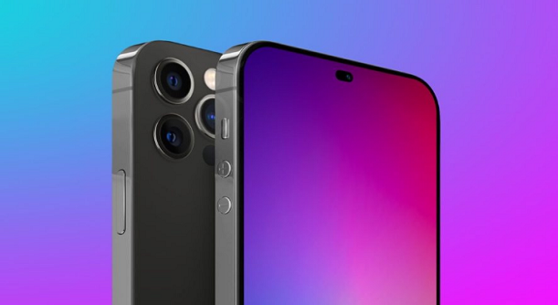

DigiNews
DigiNews
تمامی حقوق این سایت برای دیجی نیوز محفوظ است. نقل مطالب با ذکر منبع بلامانع است.
copy Right© 2022 DigiNews News Agancy, All rights reserved

آیفون 14 پرو به نمایشگر OLED باکیفیتتری نسبت به مدل استاندارد مجهز میشود
ظاهرا اپل برای ایجاد تمایز بیشتر میان آیفونها، میخواهد در مدلهای پرو آیفون 14 از پنل باکیفیتتری استفاده کند.
ظاهرا اپل میخواهد از پنلهای OLED با درجه کیفیت متفاوت در نسل بعدی آیفونها استفاده کند تا تفاوت میان مدلهای پرو آیفون 14 و نسخههای استاندارد بیش از پیش نمایان شوند.
بنابر گزارش TheElec، سامسونگ دیسپلی که یکی از تامینکنندگان اپل در حوزه نمایشگر است، در ساخت مدل آیفون 14 پرو از مواد اولیه پیشرفتهتری استفاده خواهد کرد اما برای مدل پایه آیفون 14 همچنان مواد اولیه نسل پیشین را مورد استفاده قرار خواهد داد.
با این حال گزارش مذکور به همین جا ختم نمیشود و نکته جالبتر این است که سامسونگ دیسپلی قرار است مواد اولیه M12 خود را برای آیفون 14 پرو و آیفون 14 پرو مکس به کار گیرد. این نوع از مواد اولیه نمایشگرهای اولد همان موادی هستند که قرار است در نمایشگر پرچمدارهای تاشوی آینده سامسونگ هم به کار گرفته شوند.
اطلاعات احتمالی از نمایشگرهای اولد مورد استفاده اپل
گفتنی است مواد اولیه نمایشگر اولد اجزایی هستند که با استفاده از آنها پیکسلهای قرمز، سبز و آبی روی نمایشگر به وجود میآیند. هرچه موادی که در این فرایند استفاده میشود پیشرفتهتر باشد، عملکرد نمایشگر گوشی نیز حداقل روی کاغذ افزایش خواهد یافت؛ امری که ظاهرا اپل آن را در مدل پرو از آیفون 14 پیادهسازی کرده است.
در ادامه گزارش مذکور ذکر شده که سامسونگ جهت کاهش هزینههای تولید برای آیفونهای 6.1 اینچی و 6.7 اینچی از مواد اولیه M11 استفاده خواهد کرد.
همچنین علاوه بر این موارد، ادعا شده که مدلهای رده پایین آیفون 14 از گونه LTPS پنلهای اولد TFT برخوردار خواهند بود که به پیشرفتگی پنلهای اولد TFT نوع LTPO نیستند. از سوی دیگر پنلهای LTPO TFT بخش مهمی از فناوری نمایشگر ProMotion اپل هستند که نرخ تازهسازی متغیر 120 هرتزی را فراهم میکنند.
در پایان بد نیست به این مورد نیز اشاره شود که انتظار میرود سامسونگ دیسپلی در سال 2022 برای هر 4 مدل آیفون 14 پنل اولد تولید کند، در حالی که رقیب این کمپانی یعنی الجی دیسپلی تنها تامینکننده پنل 2 مدل خواهد بود.
DigiNews
DigiNews
تمامی حقوق این سایت برای دیجی نیوز محفوظ است. نقل مطالب با ذکر منبع بلامانع است.
copy Right© 2022 DigiNews News Agancy, All rights reserved